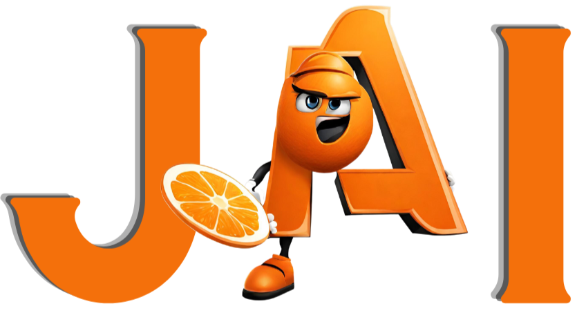

HELLO
I'am JAI,Jeruk AI
Jai akan membantu mu untuk mendeteksi kematangan buah jeruk yang efektif untukmu, ayo segera deteksi kematangannya agar kamu bisa menikmati buah yang memiliki kematangan yang maksimal. Kami membantu para petani untuk menghasilkan buah jeruk yang berkualitas dan tidak mengecewakan para konsumen untuk menikmati kematangan jeruk yang ideal, ayo, segera deteksi kematangan jeruk mu, apakah tingkat kematangan jeruk mu sudah ideal atau belum. Agar kamu bisa lebih cepat menikmatinya!
Let's Go
